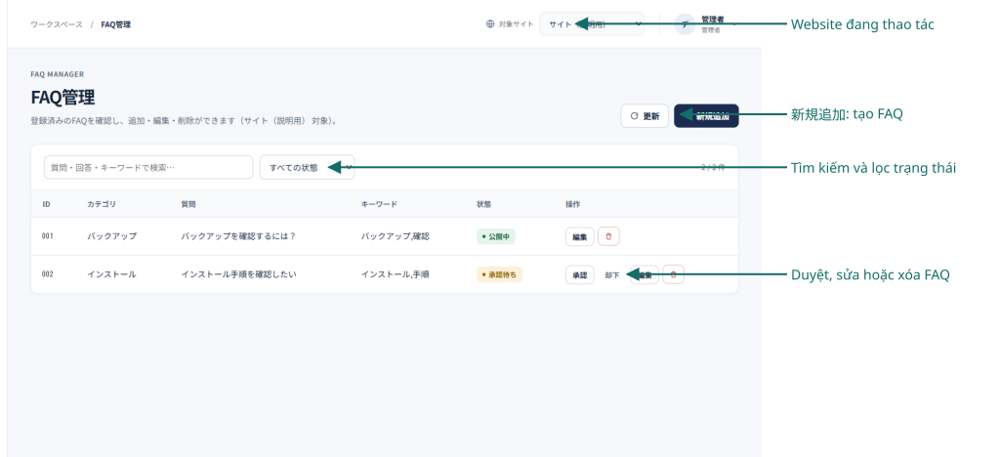
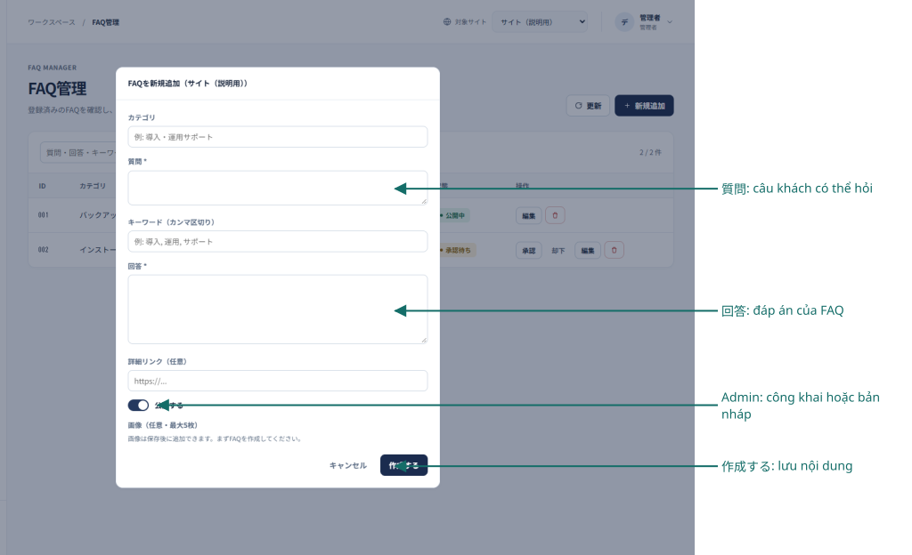
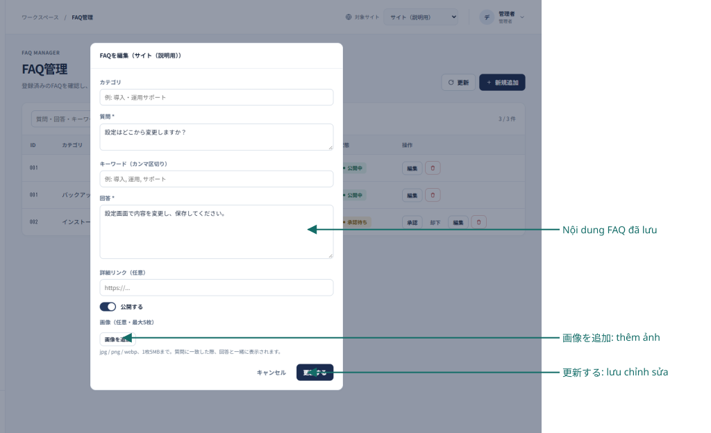
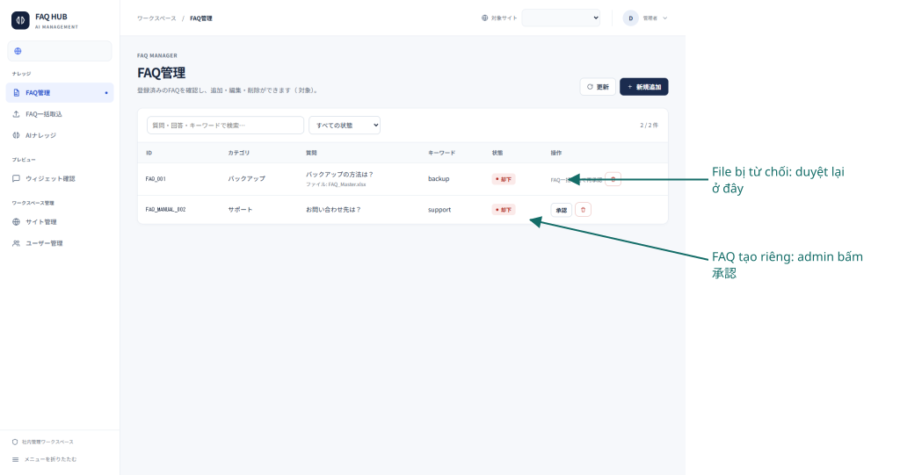
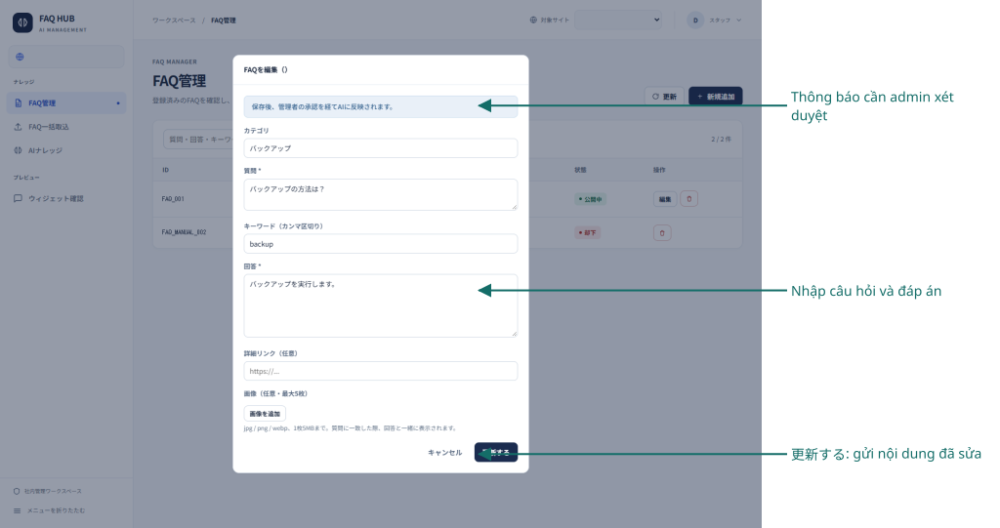

Danh sách FAQ
Chọn website → tìm kiếm / lọc trạng thái → chọn FAQ. 新規追加 → mở hộp tạo FAQ.

Tạo FAQ
Điền 質問 + 回答 → 作成する → lưu FAQ; lỗi → giữ hộp nhập và hiện thông báo.
Quản trị viên chọn 公開する để công khai hoặc 下書き để giữ bản nháp. Nhân viên lưu nội dung để chờ quản trị viên duyệt.

FAQ đã lưu
Lưu thành công → FAQ có trong danh sách → hộp chuyển sang chế độ sửa → có thể thêm ảnh.

Sửa FAQ
Chọn FAQ → 編集 → sửa nội dung → 更新する. Nếu có lỗi, hộp nhập giữ nguyên nội dung và hiển thị thông báo.
Duyệt nội dung và xử lý FAQ bị từ chối
Quản trị viên mở FAQ chờ duyệt → kiểm tra câu hỏi, đáp án và ảnh → 承認 hoặc 却下.
File Excel bị từ chối → FAQ bị khóa sửa → FAQ一括取込 → 編集 → 承認する → 更新 → mở lại 編集.

Staff lưu → 承認待ち → admin 承認 → FAQ được sử dụng. Staff không có lựa chọn bản nháp.

Xóa FAQ
Kiểm tra đúng FAQ → bấm thùng rác → xác nhận → FAQ bị xóa khỏi danh sách và không dùng cho câu hỏi mới. Các tin nhắn đã trả lời trước đó vẫn được giữ.
Xem thêm: Ảnh FAQ · Nhập FAQ từ Excel.